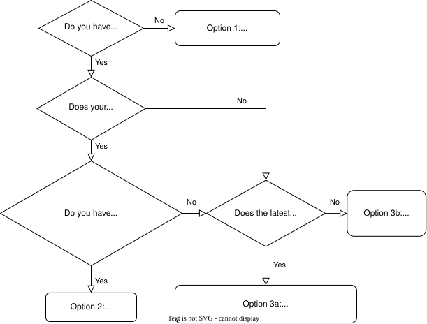

Installation#
mumax⁺ can be installed in various ways, listed as the various options below in order of increasing difficulty. The following flowchart may guide you to the easiest option for your situation.

Option 1: Google Colab#
If you don’t have access to an NVIDIA GPU, you can run mumax⁺ online using Google Colab. Simply make a copy of this Jupyter notebook and you’re good to go!
Option 2: Installing a pre-built wheel#
If you prefer to use your own GPU for more demanding simulations, you must install the mumax⁺ Python package. Pre-built wheels provide the easiest method to do so on Linux or Windows if your system has
Python 3.11-3.14
an NVIDIA GPU with Compute Capability ≥5.2
a CUDA driver of version ≥550.54.15 on Linux or ≥551.78 on Windows
If these requirements are fulfilled, the following command will automatically install mumax⁺ and its required dependencies in your active Python environment:
pip install mumaxplus -f https://github.com/mumax/plus/releases/expanded_assets/v1.2.1
Note
Some optional dependencies of mumax⁺ (e.g., for 3D plotting) are not installed by default to preserve disk space. Replace mumaxplus in the command above by mumaxplus[all] to enable all functionality.
Option 3: Installing from source#
mumax⁺ should work on any NVIDIA GPU. If no wheel is available for your system/GPU (or you want to contribute to mumax⁺ development), you will have to install mumax⁺ from source.
For this, you must install the following tools yourself. Take care to avoid version conflicts between these different types of software and your hardware: open the dropdowns for more details.
CUDA Toolkit
To see which CUDA Toolkit works for your GPU’s Compute Capability, check this Stack Overflow post.
Windows: Download an installer from the CUDA website.
Linux: Use
sudo apt-get install nvidia-cuda-toolkit, or download an installer.
Important
Make especially sure that everything CUDA-related (like nvcc) can
be found inside your PATH. On Linux, for instance, this can be done
by editing your ~/.bashrc file and adding the following lines:
# add CUDA
export PATH="/usr/local/cuda/bin:$PATH"
export LD_LIBRARY_PATH="/usr/local/cuda/> lib64:$LD_LIBRARY_PATH"
The paths may differ if the CUDA Toolkit was installed in a different location.
👉 Check CUDA installation with: nvcc --version
A C++ compiler which supports C++17
- Linux:
sudo apt-get install gcc ⚠️ Each CUDA version has a maximum supported
gccversion, as listed in This StackOverflow answer. If necessary, usesudo apt-get install gcc-<min_version>instead, with the appropriate<min_version>.
- Linux:
- Windows: Microsoft Visual C++ (MSVC) must be used, since CUDA does not support
gccon Windows. ⚠️ Make sure you install a version of MSVC that is compatible with your installed CUDA toolkit, as listed in this table (e.g., MSVC 2026 does not yet seem to be supported by CUDA as of January 2026).
During installation, check the box to include the “Desktop development with C++” workload.
After installing, check if the path to
cl.exewas added to yourPATHenvironment variable (i.e., check whetherwhere cl.exereturns an appropriate path likeC:\Program Files\Microsoft Visual Studio\2022\Community\VC\Tools\MSVC\14.29.30133\bin\HostX64\x64). If not, add it manually.
- Windows: Microsoft Visual C++ (MSVC) must be used, since CUDA does not support
👉 Check C installation with: gcc --version on Linux and where.exe cl.exe on Windows.
CPython (version ≥ 3.11), pip and miniconda/anaconda
All these Python-related tools should be included in a standard installation of Anaconda or Miniconda.
👉 Check installation with python --version, pip --version and conda --version.
Option 3a: Installing a stable release from PyPI#
If you only need the latest stable version of mumax⁺, you should now be able to run
pip install mumaxplus
This will install any Python dependencies of mumax⁺ and build mumax⁺ from source.
Note
Some optional dependencies of mumax⁺ (e.g., for 3D plotting) are not installed by default to preserve disk space. Use pip install mumaxplus[all] to enable all functionality.
Option 3b: Installing a custom mumax⁺#
If you need an older version of mumax⁺ or wish to contribute to its development, you will need Git. Click the dropdown below to download Git if you haven’t installed it yet.
Git
Windows: Download and install.
Linux:
sudo apt install git
👉 Check Git installation with: git --version
First, clone the mumax⁺ Git repository using the following command, where the --recursive flag is used to get the pybind11 submodule that is needed to build mumax⁺.
git clone --recursive https://github.com/mumax/plus.git mumaxplus
cd mumaxplus
We recommend to install mumax⁺ in a clean conda environment as follows. You could also skip this step and use your own conda environment instead if preferred.
Tools automatically installed in the conda environment
cmake 4.0.0
Python 3.13
pybind11 v2.13.6
NumPy
matplotlib
SciPy
Sphinx
conda env create -f environment.yml
conda activate mumaxplus
Finally, build and install mumax⁺ using pip.
pip install .
Tip
If changes are made to the code, then pip install -v . can be used to rebuild mumax⁺, with the -v flag enabling verbose debug information.
If you want to change only the Python code, without needing to reinstall after each change, pip install -ve . can also be used.
Tip
mumax⁺ can use either single or double floating-point precision.
This can be controlled by the command-line argument --mumaxplus-fp-precision and/or the environment variable MUMAXPLUS_FP_PRECISION.
See this tutorial page for more details.
Check your mumax⁺ installation#
To check if you successfully compiled mumax⁺, we recommend you to run some examples from the examples/ directory, such as standard problem 4.
python examples/standardproblem4.py
Or you could run the tests from the test/ directory.
pytest test
Troubleshooting
(Windows) If you encounter the error
No CUDA toolset found, try copying the files inNVIDIA GPU Computing Toolkit/CUDA/<version>/extras/visual_studio_integration/MSBuildExtensionstoMicrosoft Visual Studio/<year>/<edition>/MSBuild/Microsoft/VC/<version>/BuildCustomizations. See these instructions for more details.(Windows) If you encounter errors related to interactions between CMake, MSVC and CUDA, like
-- Detecting CUDA compiler ABI info - failed, you may try the following methods to activate an appropriate set of environment variables. One option is to run the compilation commands in the “Developer Powershell for VS 20XX” that should have been automatically installed alongside MSVC. For CUDA \(\leq\) 12.9, another option is to call one of the.batscripts in the folder& C:\Program Files\Microsoft Visual Studio\2022\Community\VC\Auxiliary\Build, such asvcvars64.bat, before you runpip install.